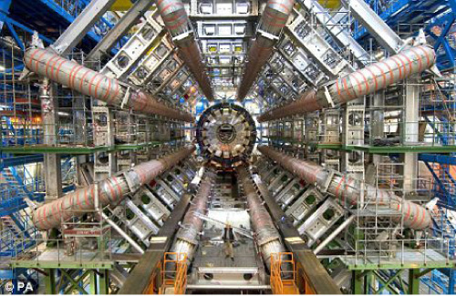

The What Particle?
Physics is not what it used to be. “The spirit of G-d hovers over the waters” of physics. Modern physics has reached the point where they are really looking for the beginning of everything and the idea (maybe even the fear) that it might be G-d is always there.

Since last month I have gotten a steady stream of inquiries regarding the discovery of the “G-d particle” at the CERN (European Center for Nuclear Research) Laboratory in Switzerland. What do I think of the discovery? Why do they call it the “G-d particle?” What is the “G-d particle” anyway?
I am very conCERNed about all this.
First of all, every particle is a G-d particle, as it was created by G-d in the 6 days of creation. The particular particle discovered at CERN is technically called the Higgs boson, named for Prof. Higgs who first theorized its existence in 1966. Its existence was needed to complete the picture of the physical universe known in physics as the Standard Model, which unifies, to a great extent, the ideas and discoveries of modern physics.
Since the 1960’s physicists had been trying unsuccessfully to find such a particle. This prompted one physicist to nickname it the “G-d particle”—because it was so elusive and mysterious.1 Now that they have presumably found it, it’s understandable that they are celebrating.
THE DIRECTION OF MODERN PHYSICS
For us, any development in physics has to be evaluated in terms of its role in the Era of Moshiach. Actually, this is true of every world event but it’s especially true of modern science since the entire existence of modern science—the reason it was introduced into the world in the Great Flood of Knowledge in the 1800’s—was to reveal the unity in the natural world which would ultimately prepare us for the revelation of the absolute unity of Hashem in the Era of Moshiach, as the Rebbe MH”M explains in the famous Sicha of Parshas Noach.”2
It is for this reason that I am very disappointed with particle physics in general. The great accomplishment of atomic theory in the late 1800’s leading to quantum mechanics in the early 1900’s was that it demonstrated that the various diverse forms of matter in the world are all composed of 3 fundamental particles—protons, neutrons and electrons. This brought a tremendous unity to our view of the physical world. It showed the professor that there is really no difference between his pipe and the tobacco that he’s smoking in it.
But then physicists began looking for particles that were even more fundamental than these three, particles that the protons, neutrons and electrons themselves were supposed to be composed of. They did this by building huge “atom smashers” and sending beams of these particles to collide with each other at very high speeds. (The ultimate atom smasher is the Large Hadron Collider (LHC) at CERN where the “G-d particle” was discovered.)
Indeed this led to the discovery of more fundamental “particles” but they discovered what one famous physicist called “an embarrassingly large number” of such particles. So in the structure of particle physics they were no longer reducing the number of different substances in the world to a few basic ones (like the proton, neutron and electron) but instead were getting a vast number of “basic particles.” It seems that they are going in the wrong direction.
What’s even worse is that it’s questionable if these newly discovered “particles” can even be considered particles at all because after the collision that produces them they only last for a small fraction of a second before they metamorphosize into other particles and energy. For example, the Higgs boson (G-d particle) lasts for only a fraction of a trillionth of a second. In my opinion, such particles can only be considered artificial particles.
To illustrate this with an example, suppose you have a rock and you want to find out what it’s composed of—what its fundamental particles are. So you throw it against another rock and you see that it emits a spark. Would you say that the spark is a fundamental component particle of the stone? No, it’s only an effect of the collision. The stone is not made of sparks.
THE REAL G-D PARTICLE
The Baal Shem Tov says that from everything that a Jew sees he must learn something and apply it to his service of Hashem. So we must learn something from the discovery of the “G-d particle.”
Firstly, the fact that the name of G-d is being used in this context is significant. Physics is not what it used to be. “The spirit of G-d hovers over the waters” of physics. It is always in the background. Modern physics has reached the point where they are really looking for the beginning of everything and the idea (maybe even the fear) that it might be G-d is always there. The fact that the universe is clearly fine tuned for the existence of man is now well known in all of physics and must constantly be addressed. The attempts to sidestep it—such as the idea of multiple universes—are so preposterous that, in effect, we may say that they have already given up. Many physicists believe in G-d the Creator and express it openly. They are no longer afraid to say so.3
One more thing. In one email inquiry about the “G-d particle” I was asked what I thought of the discovery. I responded with some of the things that I have written in this article, playing it down. So my email correspondent responded with a video attached and wrote, “But look at how happy the scientists are in this video…”
If a particle which is smaller than anything we can imagine and which lasts for an unimaginably short amount of time can bring happiness and excitement to a group of people, how much more so must we be excited by even the “smallest” Mitzva or word of Torah—which is in fact infinite and influences the entire universe and lasts forever. More importantly, as the Rebbe MH”M says, it has the power to complete the Geula and bring about the complete revelation of Melech HaMoshiach!
To encapsulate: The real G-d particle is the Mitzva.
NOTES:
1) See the Wikipedia entry for G-d particle where a second reason, which we can’t repeat, is alleged.
2) Likkutei Sichos Vol. 15 p. 42, Scientific Thought, Chapter V, sec. 1.
3) See the Introduction to Scientific Thought for a full discussion of this.
Prof. Shimon Silman. "The What Particle?." Beis Moshiach, no. 845 (August 10, 2012).